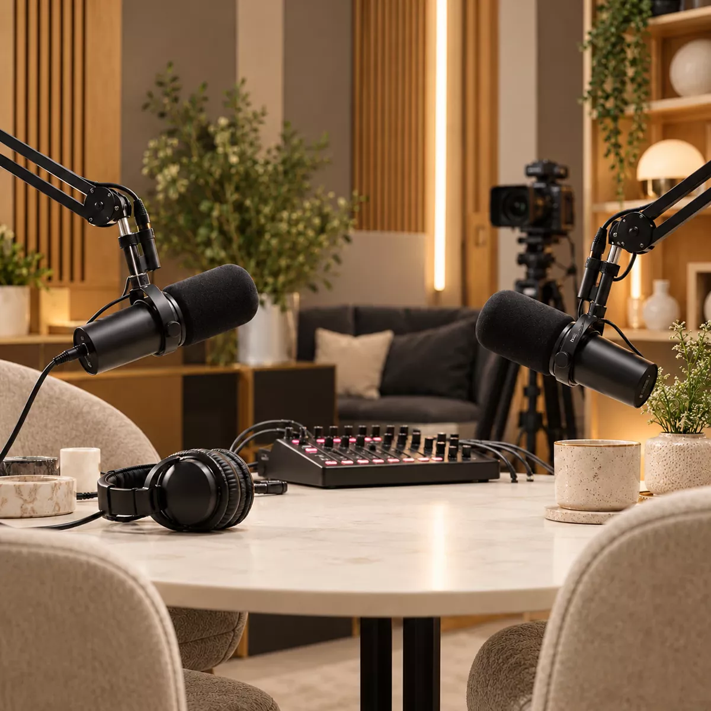

Video podcast or audio podcast: which does your business need?
Not long ago, a podcast meant audio. Today, many of the most-watched podcasts are on YouTube, and clips from them fill LinkedIn feeds every day.
So should your business podcast be on camera? The short answer: if you want your podcast to be discovered and to feed your social channels, video is usually worth it. If you mainly want a regular show for people who already know you, audio may be all you need.
Here's how to decide, what each option involves, and what the difference costs.
When audio is enough
Audio-only podcasts are simpler to make and easier to keep going, which matters more than people expect. A show that runs reliably for a year will do more for you than an ambitious one that stops after six episodes.
- It costs less. Editing audio takes less time than editing several camera angles, so each episode is cheaper to produce.
- Guests relax more easily. Some people freeze in front of a camera but talk freely into a microphone.
- You can record almost anywhere. A quiet room is all you need. There's no set, lighting or wardrobe to think about.
- It fits how people listen. Audio suits listeners who tune in on a commute, at the gym or while working.
Audio works well for internal podcasts, shows aimed at an existing community, and businesses that want a dependable, low-maintenance channel.
When video earns its keep
Video asks more of you, but it gives more back, especially if your podcast is part of your marketing.
- It helps people find you. YouTube is now one of the biggest places people discover podcasts, and it's also a search engine in its own right.
- It creates clips. Short vertical clips for LinkedIn, Instagram, TikTok and YouTube Shorts are often how new people first come across a show. You can't clip a face from an audio file.
- It builds trust faster. Seeing the people behind a business, their expressions and how they react, does more than a voice alone.
- It works harder for sales. A short clip of your team answering a customer's question is a strong thing to send before or after a sales call.
If you want the podcast to bring in new audiences and feed your social channels, video is usually the right call. We cover this in more detail in how B2B companies turn a podcast into content and leads.

What video changes in practice
Adding cameras changes more than the edit. It's worth knowing what's involved before you decide:
- Where will you record? A studio set looks polished; an office or event can work well with the right setup.
- How many cameras? One wide shot is simple; two or three angles look far more professional.
- What will people wear? Plain colours work better on camera than busy patterns or logos.
- Where will people look? Talking to each other, not the camera, usually feels most natural.
- Who will appear? Some guests are happy on audio but less keen to be filmed, so ask in advance.
None of this is difficult, but it's the reason video sessions need a little more planning and set-up time.
What the difference costs
The recording session itself costs the same either way: £250 for up to 90 minutes at our London studio. The difference is mainly in editing:
| Audio podcast | Video podcast | |
|---|---|---|
| Recording session | £250 for up to 90 minutes | £250 for up to 90 minutes |
| Editing | From £175 per episode | From £350 per episode |
| Social clips | Limited, as there's no video to clip | From £195 for 5 captioned clips |
| Where it's published | Apple Podcasts, Spotify and other podcast apps | All of those, plus YouTube and video on Spotify |
So video adds roughly £175 per episode before clips. For a full breakdown, see how much it costs to make a podcast.
The middle ground: record video, decide later
You don't have to choose once and for all. A popular approach is to record on camera every time, then decide how much of the footage to use:
- Audio plus clipsPublish the episode as audio, and use the footage only for a handful of short social clips.
- Full video on YouTubePublish the whole conversation as video once you're ready to build a channel.
- Everything, everywhereFull video on YouTube and Spotify, audio on podcast apps, and clips on every social channel.
Recording on camera from the start means you never have to wish you had.
How to decide
Ask yourself three questions:
- Do you want new people to discover you, or mainly to stay in touch with people who already know you?
- Will you use clips on LinkedIn and other social channels?
- Are your hosts and guests comfortable on camera?
If you answered yes to the first two, video is likely worth it. If not, start with audio, and consider recording video anyway so the option is there later.
Questions about video and audio podcasts
Should a business podcast be video or audio?
If you want to be found on YouTube, share clips on LinkedIn and other social channels, or show the people behind your business, record video. If you mainly want a regular show for loyal listeners with the least effort, audio is enough. Many businesses record video and publish both.
How much more does a video podcast cost than audio?
With MBMS Podcast Studio, a recording session costs £250 for up to 90 minutes either way. Audio editing starts from £175 per episode, and audio and video editing from £350 per episode, so video adds roughly £175 per episode before clips.
Can you record video and only publish the audio?
Yes. Recording on camera keeps your options open: you can publish audio-only at first, then use the footage for clips or a YouTube channel later without re-recording anything.
Not sure which is right for you?
We record both audio and video podcasts at our London studio, on location and remotely, and we'll give you an honest view of which suits your goals and budget.
A short call is the quickest way to work it out.